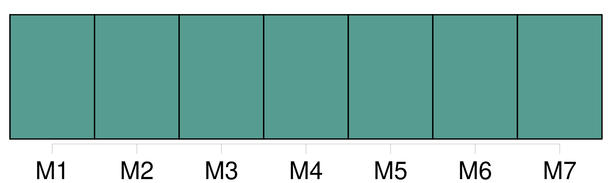
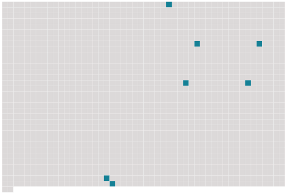

Longueur nb maillons : 7 mentions |
  |
Au sens de la présente convention, l'expression transport international s'entend de tout transport dans lequel, d'après les stipulations des parties, le point de [départ] et le point de destination, qu'il y ait ou non interruption de transport ou transbordement, sont situés soit sur le territoire de deux États parties, soit sur le territoire d'un seul État partie si une escale est prévue sur le territoire d'un autre État, même si cet État n'est pas un État partie. [12 phrases]
Dans le transport des passagers, un titre de transport individuel ou collectif doit être délivré, contenant : [14 phrases]
Article 5 [26 phrases]
L'expéditeur a le droit, à la condition d'exécuter toutes les obligations résultant du contrat de transport, de disposer de la marchandise, soit en la retirant à l'aéroport de [départ] ou de destination, soit en l'arrêtant en cours de route lors d'un atterrissage, soit en la faisant livrer au lieu de destination ou en cours de route à une personne autre que le destinataire initialement désigné, soit en demandant son retour à l'aéroport de [départ] , pour autant que l'exercice de ce droit ne porte préjudice ni au transporteur, ni aux autres expéditeurs et avec l'obligation de rembourser les frais qui en résultent. |
 |
La ressource peut être téléchargée sur la page Ortolang
Si vous avez des questions ou vous voyez des erreurs, merci d'envoyer un mail à silvia.federzoni89@gmail.com
Site développé par S. Federzoni (contact)